|
|
|
|
|
|
|
|
| Intro | Screens | How to play | Bonuses | League | Version History |
Download IMR-Bombers Version 1.5 (October 2005)
|
Want to see Bombers in action ? We've prepared a short movie encoded in DivX, download here. |
Since 1989 Bomberman has been defined by gamers as the
ultimate multiplayer game. IMR-Bombers is a Palm version of the classic
Bomberman & DynaBlaster games. The game includes original 2D-Graphics powered by
a Palm-Optimized Graphics-Engine. An Artificial Intelligence system makes you
blink when one of the three Palm-Driven opponents traps you between explosions
and indestructible blocks.
Built around four-player matches, games strive to find the perfect balance
between playability, depth, and simple fun, a Palm Classic.
The game has the following features :
Do you have Questions / Comments / Requests ?
Is there a power-up you'd like to see in the game ?
Is there a special-feature you think we should add ?
Email us at bombers@visual-i.com and
make a difference :)
Our website resides here
The IMR-Bombers website can be found
here
If you wish to register the game, you can do so online at palmgear. Registering the game removes the '20 Games' restriction that apply to the shareware version.
| The opening
screen : Click 'Play' to start a new game or continue a paused one. Hit the menu to get to the configuration screen or to get help on how to play the game.
|
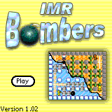 |
|
When you start a new game you get the 'new-game' screen : Here you can choose which player You (User) want to be, and against which opponents you wish to play. You can also choose the length of the League as in 'Victories'. This means that the first player to earn 1/3/5/7 Victories will be 'King Of The League' |
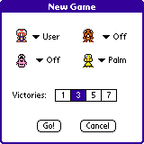 |
| If you choose
'Configuration' from the main-menu you get to configure the controls as you
like.
The game also supports the WWW GamePad, if such a GamePad is detected a small text will appear under the key-configuration saying 'GamePad™ Driver Detected'. The initial configuration sets the Up-Down-Left-Right keys to the center buttons (PageUp-PageDown-AdressBook-TodoList). To drop a bomb use the DateBook key. |
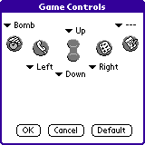 |
| Bombers is an easy and
fun game to play. You control one character (Bomberman, Duck, Worm or
Beaver). You begin your game in one of the corners armed with 1 bomb
When you start playing your initial target is to 'clear your path', you do this by placing bombs at strategic places and taking down destructible walls. Once you've cleared your path, you are more free to move around, collect bonuses and eliminate your opponents. To eliminate an opponent you need to catch him with fire from your or anybody else's explosion. Most of the game consists of avoiding bombs placed by other players and placing bombs that will eliminate your adversaries. During the game your player can collect different bonuses that lay under walls. These bonuses show up when you detonate the walls using your bombs. You will usually find bombs when you clear your path to other players.
. |
 |
| 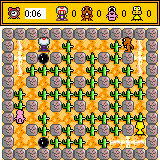 | |
| 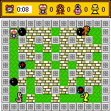 |
The first bonus you'll encounter is the Extra-Bomb bonus . This will allow you to put a bomb on the floor, and then go and put another one before the first one has exploded. The more extra-bomb bonuses you pick, the more bombs you can spread around simultaneously. 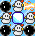
The next bonus is the Extra-Range bonus . This
bonus extends the range of your explosions. You begin with an explosion
radius of one, and it will grow by one whenever you pick up this bonus. This
allows you to reach opponents that are far away from you and put them in
hard-to-escape situations.
Small : 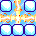,
Bigger: 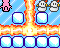,
Much Bigger :
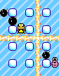
 Remote Detonation comes next .
Remote-Detonation is a mode you enter when you pick this bonus up. When you
are in Remote-Detonation mode, the bombs you drop will look like this :
. Your
bomb won't explode after 4 seconds, it will keep ticking until you hit the
'Drop Bomb' button again, then they will explode. This allows you to trap
opponents at interesting situations where they can't escape because you can
detonate your bomb whenever you want. The shortcoming of this mode is that
you can only have one bomb at a time. To get back to normal bomb mode you
need to pick up an 'Extra-Bomb' bonus ()
Remote Detonation comes next .
Remote-Detonation is a mode you enter when you pick this bonus up. When you
are in Remote-Detonation mode, the bombs you drop will look like this :
. Your
bomb won't explode after 4 seconds, it will keep ticking until you hit the
'Drop Bomb' button again, then they will explode. This allows you to trap
opponents at interesting situations where they can't escape because you can
detonate your bomb whenever you want. The shortcoming of this mode is that
you can only have one bomb at a time. To get back to normal bomb mode you
need to pick up an 'Extra-Bomb' bonus ()
Jumping Bombs are last. Jumping bombs put you in a
mode that makes you kick bombs over obstacles instead of just banging into them
and not being able to move. Jumping Bombs are experimental at the moment so you
may experience unwanted behaviour either logically or graphically, we apologize
for this. Jumping bombs will keep on bouncing over obstacles until they land on
fresh ground, otherwise they'll keep on jumping (even across screen-boundaries).
 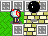
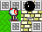
| When a game
ends the League-Screen will show up, It will show you the current winning
status for all the participating players.
A line under a trophy indicates that this is the trophy that was earned during the last game. |
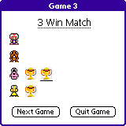 |
| When the league is over, a winner is crowned. This screen shows the winning player, together with the amount of trophies he has earned. | 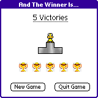 |
Version 1.5 : October 23'rd, 2004
Version 1.02 : January 6'th, 2002
Version 1.01 : December 24'th, 2001
Version 1.0 : December 21'st, 2001